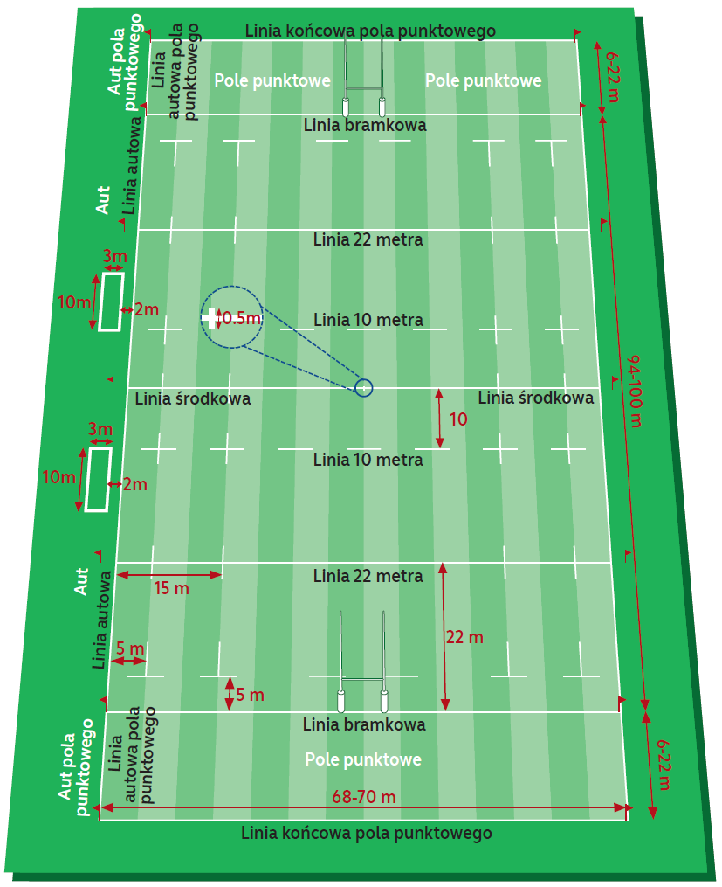
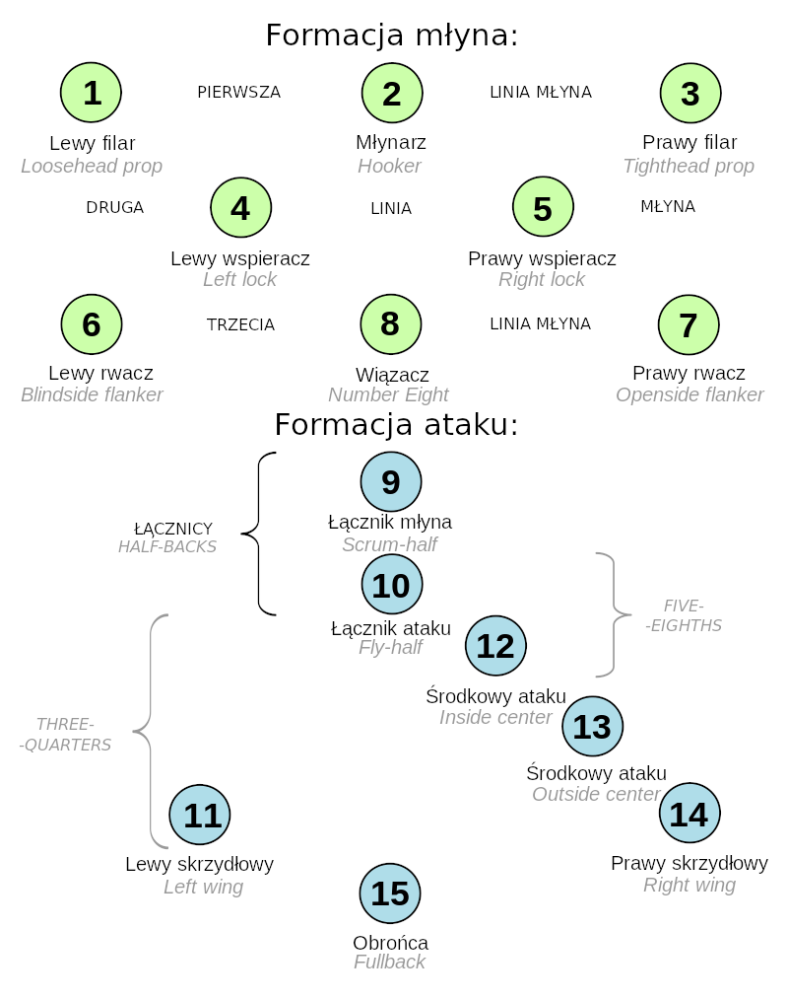

Ta część strony jest wciąż w budowie
Gra
Rugby to gra, w której celem jest przeniesienie piłki za linię bramkową przeciwnika i przyłożenie jej do ziemi w celu zdobycia punktów.
To proste… ale złożone
Powyższy opis może wydawać się prosty – ale jest jeden haczyk. Mimo że zawodnicy chcą zbliżyć się do pola punktowego przeciwnika poruszając się do przodu, piłka może być podawana tylko do tyłu. Piłka może być kopnięta do przodu, ale koledzy z drużyny kopiącego muszą znajdować się za piłką w momencie kopnięcia piłki. Ta pozorna sprzeczność stwarza potrzebę doskonałej pracy zespołowej i dużej dyscypliny, ponieważ pojedynczy gracz samemu niewiele może osiągnąć. Przy zaciętej obronie przeciwnika, tylko pracując jako zespół, gracze zdołają przesuwać piłkę do przodu w kierunku linii bramkowej i ostatecznie wygrać mecz. Rugby ma swoje unikalne aspekty, ale podobnie jak wiele innych sportów, w istocie chodzi o tworzenie i wykorzystanie przestrzeni. Zwycięzcą meczu rugby będzie drużyna, której gracze potrafią przemieszczać siebie oraz piłkę mądrze, tak aby odpowiednio wykorzystać przestrzeń, jednocześnie odmawiając drużynie przeciwnej zarówno posiadania piłki, jak i dostępu do przestrzeni, w której można ją wykorzystać.
Boisko
Pozycje
W zależności od odmiany rugby, drużyny różnią się od siebie: W rugby 15-osobowym drużyna dzieli się na formację młyna, składającą się z 8 zawodników oraz formację ataku, w skład której wchodzi 7 zawodników. W rugby 7-osobowym formacja młyna liczy 3 zawodników, a formacja ataku 4.
Pozycje graczy mają swoje odpowiednie nazwy, jednak w zależności od regionu i kraju, mogą występować pewne różnice.
Gra dla każdego niezależnie od kształtu i rozmiaru
Rugby Union zawsze charakteryzowało się przekonaniem, że jest to gra w której odnajdą się wszyscy, niezależnie od kształtu i rozmiaru ich ciała. Każda pozycja na boisku wymaga innego zestawu atrybutów fizycznych i technicznych co sprawia, że poprzez właśnie tą różnorodność sport ten dostępny jest dla każdego.
Pozycje według numeru
Punktacja
Istnieją cztery główne sposoby zdobywania punktów w rugby.
Przyłożenie - 5 punktów
Przyłożenie jest zaliczane, gdy piłka zostanie przyłożona do ziemi w polu punktowym przeciwnika. Jeśli zawodnik zdobyłby przyłożenie, gdyby nie faul ze strony przeciwnika, sędzia może przyznać zdobycie punktów jako kara dla przeciwnika.
Karny - 3 punkty
Po przewinieniu przeciwnika drużyna ma kilka możliwości wznowienia gry z inicjatywą po swojej stronie. Jedną z możliwości jest kopnięcie na słupy.
Podwyższenie - 2 punkty
Po zdobyciu przyłożenia, drużyna może spróbować podwyższyć wynik o dwa dodatkowe punkty, kopiąc piłkę między słupami oraz ponad poprzeczką z miejsca leżącego na tej samej szerokości boiska, na której zostało zdobyte przyłożenie. Kopnięcie podwyższające może być wykonane z podstawki lub jako dropkick (kopnięcie zaraz upuszczeniu piłki i jej pierwszym odbiciu się od ziemi). W siedmioosobowej odmianie rugby, ze względu na ilość czasu dostępnego na podwyższenie, wykonywane są tylko dropkick’i.
Drop goal - 3 punkty
Punty za drop goal są przyznawane, gdy zawodnik celnie trafi między słupy i powyżej poprzeczki, kopiąc dropkick w grze otwartej.
Gra otwarta
Termin „gry otwartej” odnosi się do każdej fazy meczu, w której piłka jest przekazywana lub kopana pomiędzy zawodnikami drużyny, a obie drużyny walczą o piłkę. W otwartej grze drużyna będąca w posiadaniu piłki stara się przekazać piłkę graczom w przestrzeni, umożliwiającej przemieszczenia się naprzód w kierunku pola punktowego przeciwnika.
Rozpoczęcie
Każda połowa meczu rozpoczyna się kopem drop kick ze środka boiska. Drużyna, w stronę której wykonywany jest kop musi znajdować się co najmniej 10 metrów od piłki w momencie jej kopnięcia, a kopnięcie musi przebyć minimum 10 metrów w kierunku pola punktowego przeciwnika.
Podanie
Zawodnik może podać (rzucić piłkę) do kolegi z drużyny, który jest w lepszej pozycji do kontynuowania ataku, ale podanie nie może być „do przodu” tzn. z mierzać w kierunku linii bramkowej drużyny przeciwnej. Musi lecieć w bok lub „do tyłu ” (tzn. z powrotem w kierunku linii bramkowej podającego). Poruszając się z piłką do przodu i podając do tyłu, zdobywa się terytorium. W przypadku podania do przodu sędzia przerywa grę i przyznaje młyn z prawem wrzutu drużynie, która nie była w posiadaniu piłki w momencie podania. W ten sposób podanie w przód jest karane utratą posiadania piłki.
Odbicie do przodu
Kiedy gracz niepoprawnie posługuje się z piłką, tj. upuszcza ją do przodu lub pozwala jej odbić się od ręki lub ramienia do przodu, traktowane jest to na równi z podaniem do przodu i jest to karane młynem z prawem do wrzutu przez przeciwnika.
Kopanie
Jeśli gracz zdecyduje się nie podawać piłki lub biec z nią, może zamiast tego kopnąć piłkę. Kopnięcie może być
skierowane do przodu, ale wszyscy koledzy z drużyny znajdujący się przed piłką w momencie jej wykopu są na pozycji
spalonej, dopóki nie wycofają się za
kopiącego lub nie zostaną wyprzedzeni przez niego lub innego zawodnika z ich drużyny, który wyprzedził kopiącego po
kopnięciu piłki.
Utrzymanie posiadania piłki po kopnięciu jest wyzwaniem, a strategie kopania obejmują:
- Kopanie w strefę, do której zawodnicy z drużyny zdążą dobiec i podjąć piłkę zanim zrobi to przeciwnik.
- Kopanie szeroko, na ukos boiska, aby skrzydłowy lub inny zawodnik mógł złapać piłkę
- Kopanie piłki w aut, skutkujące utratą posiadania piłki, ale umożliwijące drużynie kopiącej walkę o piłkę w
znacznie korzystniejszej pozycji na boisku.
Piłka po kopnięciu powinna odbić się od boiska, aby aut wykonywany był w miejscu jej wypadnięcia poza boisko, w
przeciwnym razie aut będzie wykonywany z
miejsca kopu (poza kopaniem ze szczególnych miejsc). Kopnięcie w aut jako karny nie powoduje utraty posiadania piłki
i nie podlega wymogowi odbicia piłki od boiska.
Szarża, przegrupowanie i maul
Rugby jest nie tylko grą uników, która wymaga tworzenia i wykorzystania przestrzeni, ale także sportem kontaktowym. W rzeczywistości sytuacje kontaktu mogą być mechanizmem, dzięki któremu gracze tworzą przestrzeń, której potrzebują do ataku. Trzy najczęstsze sytuacje kontaktu, które występują w otwartej grze, to szarża, przegrupowanie (ang. ruck) i maul.
Szarża
Tylko niosący piłkę może zostać zaszarżowany przez przeciwnika. Szarża ma miejsce, gdy zawodnik trzymający piłkę zostanie pochwycony i sprowadzony na ziemię przez jednego lub więcej przeciwników, tj. ma jedno lub oba kolana na ziemi, siedzi na ziemi lub znajduje się na innym zawodniku, który leży/siedzi na ziemi. Aby utrzymać ciągłość gry, zawodnik posiadający piłkę musi wypuścić piłkę natychmiast po szarży, a szarżujący musi puścić zawodnika zaszarżowanego i odtoczyć się od piłki. Pozwala to innym walczyć o piłkę, rozpoczynając w ten sposób nową fazę gry - przegrupowanie.
Przegrupowanie (ruck)
Przegrupowanie powstaje, gdy piłka leży na ziemi, a jeden lub więcej zawodników z każdej z drużyn stoją na nogach (brak kontaktu kolan z ziemią) w kontakcie między sobą, zakrywając przestrzeń nad piłką. Zawodnicy nie mogą dotykać piłki w przegrupowaniu i muszą używać stóp do przesuwania jej lub przepychania przeciwnika nad nią tak, aby piłka wynurzyła się za stopą ostatniego gracza, który bierze udział w przegrupowaniu. Dopiero z tego miejsca można podnieść piłkę.
Maul
Maul ma miejsce, gdy niosący piłkę gracz wciąż znajdując się na nogach jest trzymany przez jednego lub więcej przeciwników, a jeden lub więcej zawodników z drużyny niosącego piłkę chwyta go (dowiązuję się) i próbuje wraz z nim poruszać się do przodu (dlatego maul potrzebuje co najmniej trzech graczy). Piłka nie może dotykać ziemi. Obie drużyny mogą próbować zdobyć terytorium, pchając przeciwników w kierunku ich linii bramkowych. Piłka może być następnie przekazana do tyłu między graczami w maul’u i ostatecznie podana graczowi, który nie znajduje się w maul’u, lub gracz może opuścić maul trzymając piłkę.
Młyn
Młyn (ang. scrum) to sposób na wznowienie gry po jej zatrzymaniu, które zostało spowodowane drobnym naruszeniem przepisów (na przykład podanie do przód lub odbicie do przodu) – lub piłka była nie możliwa do zagrania w przegrupowaniu lub maul’u. Młyn służy do zebrania wszystkich zawodników młyna (w angielskim nazewnictwie zawodników młyna nazywa się „forwards”, a więc dosłownie tłumacząc „przodów/zawodników przednich”) i rozgrywających młyna w jednym miejscu na boisku, zapewniając zawodnikom ataku (w angielskim nazewnictwie zawodników ataku nazywa się „backs”, a więc dosłownie tłumacząc „tyłów/zawodników tylnych”) możliwość przeprowadzenia natarcia z wykorzystaniem przestrzeni stworzonej gdzie indziej. W rugby 15-osobowym jest ośmiu graczy w młyna w każdej drużynie, a w rugby 7-osobowym po trzech na drużynę. Zawodnicy młyna wiążą się razem poprzez uchwycenie graczy ze swojej drużyny wokół bioder, ud lub barków, tak aby mogli utworzyć jak najbardziej zwartą grupę, która jednocześnie będzie pchać przeciwnika związanego w ten sam sposób. Pierwsza linia młyna liczy trzy osoby Piłka zostaje wrzucana do środka tunelu pomiędzy dwoma przeciwnymi pierwszymi liniami i w tym momencie rozpoczyna się walka o piłkę, poprzez próbę zahaczenia piłki nogą i przetransportowania jej w ten sposób z powrotem w kierunku swoich kolegów z drużyny lub przepchania przeciwników nad piłką. Drużyna, która wrzucająca piłkę w młyn, zwykle zachowuje posiadanie, ponieważ młynarz (zawodnik z nr 2) i rozgrywający młyna (nr 9) mogą zsynchronizować swoje działania. Gdy piłka zostanie przekazana do ostatniej stopy zawodnika młyna można rozpocząć grę otwartą poprzez podniesienie piłki przez zawodnika młyna lub podanie piłki przez rozgrywającego młyna w stronę zawodników ataku.
Rozgrywający młyna
Kluczowym graczem w młynie jest rozgrywający młyna (nr 9). Ten gracz wrzuca piłkę do młyna, przechodzi za najdalej oddaloną stopę zawodnika młyna i zwykle jest graczem, który podnosi piłkę i podaje do rozgrywającego ataku, który następnie przekazuje piłkę do reszty zawodników ataku.
Aut
Aut to sposób na wznowienie gry po tym, jak piłka wejdzie poza linię poczną boiska. Aut skupia wybranych zawodników młyna w jednym miejscu w pobliżu linii bocznej, dzięki czemu zawodnicy ataku mogą wykorzystać resztę pola gry. Priorytetem dla zawodników skupionych w formacji autowej jest zdobycie posiadania nad piłką i jej efektywne przekazanie do zawodników ataku. Zawodnicy biorący udział w formacji autowej ustawiają się w dwóch liniach, prostopadłych do linii bocznej, w odległości jednego metra od siebie. Młynarz (nr 2) wrzuca piłkę korytarzem pomiędzy tymi dwoma liniami graczy. Ponieważ gracze z drużyny wrzucającego wiedzą, dokąd może trafić rzut, ta drużyna ma przewagę w utrzymaniu posiadania. Przeciwnik może walczyć o piłkę i dzięki dobremu przewidywaniu oraz szybkim działaniom aut często skutkuje zmianą posiadania piłki. Gracz, który pomyślnie złapie piłkę, może ją zatrzymać i biec z nią co zazwyczaj w tym wypadu doprowadzi do utworzenia się maul’a, lub może podać do odbierającego (gracza, który stoi obok formacji autowej, który czeka na takie podanie), który następnie poda do zawodników szykujących się do natarcia w grze otwartej.
Wyniesienie w aucie
Aby umożliwić zawodnikom łapanie wysokich rzutów w linii, dozwolone jest, aby łapiący był wyniesiony do góry przez kolegów z drużyny podczas skoku w celu złapania piłki. Bezpieczeństwo jest tutaj najważniejsze, a każdy gracz, który jest ponad ziemią, musi być wspierany, dopóki ten gracz nie powróci na ziemię. Zawodnik nie może być atakowany w powietrzu, a trzymanie, pchanie lub przewracanie przeciwnika są wykroczeniami sankcjonowanymi poprzez rzut karny.
Spalony
Prawo spalonego w rugby ogranicza miejsce na boisku, w których mogą znajdować się zawodnicy, aby zapewnić przestrzeń do ataku i obrony. W uproszczeniu zazwyczaj zawodnik jest na pozycji spalonej, jeśli jest bliżej linii bramkowej przeciwnika niż jego kolega z drużyny, który niesie piłkę lub który ostatnio nią grał. Bycie na pozycji spalonej samo w sobie nie jest przewinieniem, ale gracz na pozycji spalonej nie może brać udziału w grze, dopóki nie znajdzie się ponownie na prawidłowej pozycji. Jeżeli zawodnik na pozycji spalonej bierze udział w grze, zostanie on ukarany. Po szarży linie spalonego są tworzone, gdy przynajmniej jeden zawodnik stoi na nogach i znajduje się nad piłką, która leży na ziemi. Linia spalonego każdej drużyny biegnie równolegle do linii bramkowej przez najbardziej wysunięty do tyłu punkt zawodnika uczestniczącego w szarży lub będącego na nogach nad piłką.
Korzyść
Prawo korzyści pozwala zachowała większą ciągłość gry. W przypadku, gdy podczas meczu doszło do naruszenia przepisów i przerwa w grze pozbawiłaby drużynę, która nie popełniła przewinienia, możliwości zdobycia punktów, sędzia może zastosować prawo korzyści i pozwolić na kontynuację gry.
Kara
NaNaruszenia przepisów mające znaczący wpływ na sytuację przeciwnika karane są rzutem karnym.
Możliwość wyboru kar
Jeśli miejsce, w którym przyznana jest kara, znajduje się w zasięgu bramki, drużyna zazwyczaj wybiera kopnięcie na słupy. Piłka jest umieszczana na podstawce, a kopiący próbuje trafić nią między słupkami i nad poprzeczką. Za udane kopnięcie przyznaje się trzy punkty. Drużyna może zdecydować się nie kopać za bramkę. Inne opcje obejmują młyn, podkopnięcie („szybki karny”), aby wprowadzić piłkę do otwartej gry, lub kopnięcie w aut (gdzie to drużyna kopiąca będzie wrzucać piłkę w formację autową, a więc będzie posiadać przewagę). Rzut wolny przyznawany jest za mniej istotne przewinienia. Drużyna nie może zdobyć punktów bezpośrednio z rzutu wolnego. Zespół może zdecydować się na młyn zamiast rzutu wolnego.